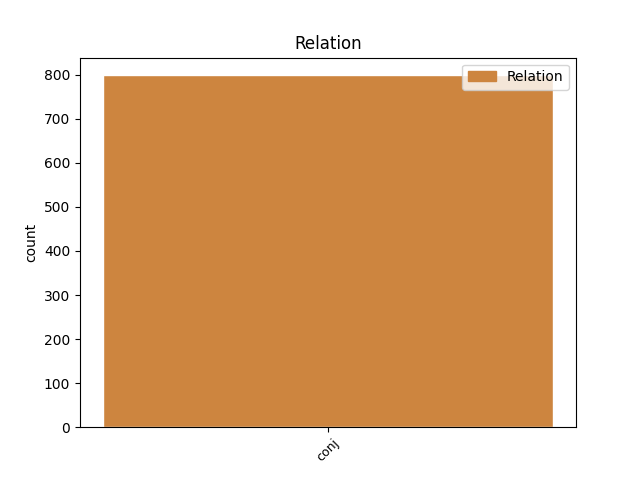
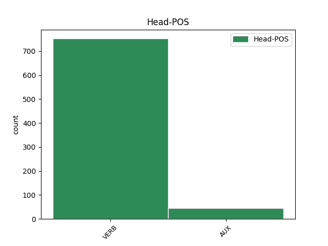
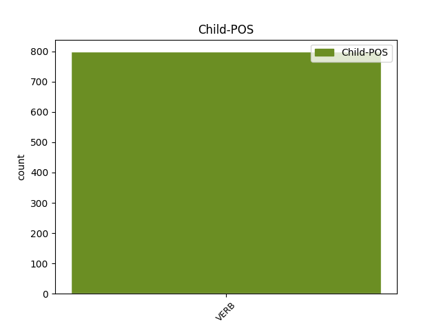

Distribution of features within this leaf



Agreement Rules sorted by frequency.
- When the dependent token is the conjunct(conj) of the head token, and the dependent token is VERB.
1 ל _ _ _ _ 0 _ _ _
2 גליל _ _ _ _ 0 _ _ _
3 לא _ _ _ _ 0 _ _ _
4 היתה _ _ _ _ 0 _ _ _
5 תשובה _ _ _ _ 0 _ _ _
6 ל _ _ _ _ 0 _ _ _
7 ה_ _ _ _ _ 0 _ _ _
8 יכולת _ _ _ _ 0 _ _ _
9 ה _ _ _ _ 0 _ _ _
10 אישית _ _ _ _ 0 _ _ _
11 ה _ _ _ _ 0 _ _ _
12 גבוהה _ _ _ _ 0 _ _ _
13 של _ _ _ _ 0 _ _ _
14 פירסון _ _ _ _ 0 _ _ _
15 , _ _ _ _ 0 _ _ _
16 ש _ _ _ _ 0 _ _ _
17 קלע קלע VERB VERB Gender=Masc|HebBinyan=PAAL|Number=Sing|Person=3|Tense=Past|Voice=Act 0 _ _ _
18 33 _ _ _ _ 0 _ _ _
19 נקודות _ _ _ _ 0 _ _ _
20 ו _ _ _ _ 0 _ _ _
21 ריכז ריכז VERB VERB Gender=Masc|HebBinyan=PIEL|Number=Sing|Person=3|Tense=Past|Voice=Act 17 conj _ _
22 את _ _ _ _ 0 _ _ _
23 משחק _ _ _ _ 0 _ _ _
24 קבוצה_ _ _ _ _ 0 _ _ _
25 _של_ _ _ _ _ 0 _ _ _
26 _הוא _ _ _ _ 0 _ _ _
27 במשך _ _ _ _ 0 _ _ _
28 דקות _ _ _ _ 0 _ _ _
29 רבות _ _ _ _ 0 _ _ _
30 . _ _ _ _ 0 _ _ _
Disagree Examples:
1 פדרציה _ _ _ _ 0 _ _ _
2 אחרת _ _ _ _ 0 _ _ _
3 ה _ _ _ _ 0 _ _ _
4 עומדת _ _ _ _ 0 _ _ _
5 להתפרק _ _ _ _ 0 _ _ _
6 היא _ _ _ _ 0 _ _ _
7 יוגוסלוויה _ _ _ _ 0 _ _ _
8 , _ _ _ _ 0 _ _ _
9 ו _ _ _ _ 0 _ _ _
10 גם _ _ _ _ 0 _ _ _
11 שם _ _ _ _ 0 _ _ _
12 פרצו פרץ VERB VERB Gender=Fem,Masc|HebBinyan=PAAL|Number=Plur|Person=3|Tense=Past|Voice=Act 0 _ _ _
13 ו _ _ _ _ 0 _ _ _
14 יפרצו פרץ VERB VERB Gender=Fem,Masc|Number=Plur|Person=3|Tense=Fut 12 conj _ _
15 קרבות _ _ _ _ 0 _ _ _
16 מרים _ _ _ _ 0 _ _ _
17 בין _ _ _ _ 0 _ _ _
18 בני _ _ _ _ 0 _ _ _
19 אותה _ _ _ _ 0 _ _ _
20 אומה _ _ _ _ 0 _ _ _
21 יוגוסלווית _ _ _ _ 0 _ _ _
22 מלאכותית _ _ _ _ 0 _ _ _
23 , _ _ _ _ 0 _ _ _
24 ה _ _ _ _ 0 _ _ _
25 מורכבת _ _ _ _ 0 _ _ _
26 מ _ _ _ _ 0 _ _ _
27 שמונה _ _ _ _ 0 _ _ _
28 קבוצות _ _ _ _ 0 _ _ _
29 יריבות _ _ _ _ 0 _ _ _
30 . _ _ _ _ 0 _ _ _
1 ו _ _ _ _ 0 _ _ _
2 ב _ _ _ _ 0 _ _ _
3 כל _ _ _ _ 0 _ _ _
4 זאת _ _ _ _ 0 _ _ _
5 , _ _ _ _ 0 _ _ _
6 שאלנו _ _ _ _ 0 _ _ _
7 את _ _ _ _ 0 _ _ _
8 פנקייביץ _ _ _ _ 0 _ _ _
9 , _ _ _ _ 0 _ _ _
10 מה _ _ _ _ 0 _ _ _
11 עשה _ _ _ _ 0 _ _ _
12 את _ _ _ _ 0 _ _ _
13 ה _ _ _ _ 0 _ _ _
14 הבדל _ _ _ _ 0 _ _ _
15 בין _ _ _ _ 0 _ _ _
16 מי _ _ _ _ 0 _ _ _
17 ש _ _ _ _ 0 _ _ _
18 הצילו _ _ _ _ 0 _ _ _
19 יהודים _ _ _ _ 0 _ _ _
20 לבין _ _ _ _ 0 _ _ _
21 מי _ _ _ _ 0 _ _ _
22 ש _ _ _ _ 0 _ _ _
23 יכלו יכל VERB VERB Gender=Fem,Masc|Number=Plur|Person=3|Tense=Fut 0 _ _ _
24 להצילם _ _ _ _ 0 _ _ _
25 את _ _ _ _ 0 _ _ _
26 _הם _ _ _ _ 0 _ _ _
27 ו _ _ _ _ 0 _ _ _
28 לא _ _ _ _ 0 _ _ _
29 עשו עשה VERB VERB Gender=Fem,Masc|HebBinyan=PAAL|Number=Plur|Person=3|Tense=Past|Voice=Act 23 conj _ _
30 זאת _ _ _ _ 0 _ _ _
31 ? _ _ _ _ 0 _ _ _
1 מ _ _ _ _ 0 _ _ _
2 חוץ _ _ _ _ 0 _ _ _
3 ל _ _ _ _ 0 _ _ _
4 ה_ _ _ _ _ 0 _ _ _
5 תנועה _ _ _ _ 0 _ _ _
6 יושבים _ _ _ _ 0 _ _ _
7 היום _ _ _ _ 0 _ _ _
8 אנשים _ _ _ _ 0 _ _ _
9 ש _ _ _ _ 0 _ _ _
10 ב _ _ _ _ 0 _ _ _
11 ה_ _ _ _ _ 0 _ _ _
12 עבר _ _ _ _ 0 _ _ _
13 השתייכו השתייך VERB VERB Gender=Fem,Masc|HebBinyan=HITPAEL|Number=Plur|Person=3|Tense=Past 0 _ _ _
14 אל_ _ _ _ _ 0 _ _ _
15 _היא _ _ _ _ 0 _ _ _
16 , _ _ _ _ 0 _ _ _
17 ו _ _ _ _ 0 _ _ _
18 אולי _ _ _ _ 0 _ _ _
19 הם _ _ _ _ 0 _ _ _
20 יבקשו ביקש VERB VERB Gender=Fem,Masc|HebBinyan=PIEL|Number=Plur|Person=3|Tense=Fut|Voice=Act 13 conj _ _
21 עתה _ _ _ _ 0 _ _ _
22 לחזור _ _ _ _ 0 _ _ _
23 ל _ _ _ _ 0 _ _ _
24 פעילות _ _ _ _ 0 _ _ _
25 או _ _ _ _ 0 _ _ _
26 ש _ _ _ _ 0 _ _ _
27 יבקשו _ _ _ _ 0 _ _ _
28 להחזיר _ _ _ _ 0 _ _ _
29 את_ _ _ _ _ 0 _ _ _
30 _הם _ _ _ _ 0 _ _ _
31 . _ _ _ _ 0 _ _ _
1 חלאסקו _ _ _ _ 0 _ _ _
2 ידע ידע VERB VERB Gender=Masc|Number=Sing|Person=3|Tense=Past 0 _ _ _
3 ש _ _ _ _ 0 _ _ _
4 אם _ _ _ _ 0 _ _ _
5 ישוב _ _ _ _ 0 _ _ _
6 , _ _ _ _ 0 _ _ _
7 הוא _ _ _ _ 0 _ _ _
8 ינודה _ _ _ _ 0 _ _ _
9 ו _ _ _ _ 0 _ _ _
10 ימנעו מנע VERB VERB Gender=Fem,Masc|Number=Plur|Person=3|Tense=Fut 2 conj _ _
11 מן_ _ _ _ _ 0 _ _ _
12 _הוא _ _ _ _ 0 _ _ _
13 לפרסם _ _ _ _ 0 _ _ _
14 ו _ _ _ _ 0 _ _ _
15 ליצור _ _ _ _ 0 _ _ _
16 . _ _ _ _ 0 _ _ _
1 הואיל _ _ _ _ 0 _ _ _
2 ו _ _ _ _ 0 _ _ _
3 זה _ _ _ _ 0 _ _ _
4 היה _ _ _ _ 0 _ _ _
5 דפוס _ _ _ _ 0 _ _ _
6 מנהיגות_ _ _ _ _ 0 _ _ _
7 _של_ _ _ _ _ 0 _ _ _
8 _הוא _ _ _ _ 0 _ _ _
9 , _ _ _ _ 0 _ _ _
10 לא _ _ _ _ 0 _ _ _
11 צמח צמח VERB VERB Gender=Masc|Number=Sing|Person=3|Tense=Past 0 _ _ _
12 ל_ _ _ _ _ 0 _ _ _
13 _הוא _ _ _ _ 0 _ _ _
14 ממלא _ _ _ _ 0 _ _ _
15 מקום _ _ _ _ 0 _ _ _
16 , _ _ _ _ 0 _ _ _
17 ו _ _ _ _ 0 _ _ _
18 עם _ _ _ _ 0 _ _ _
19 הרצחו _ _ _ _ 0 _ _ _
20 תגווע גווע VERB VERB Gender=Fem|HebBinyan=PAAL|Number=Sing|Person=3|Tense=Fut|Voice=Act 11 conj _ _
21 תנועת _ _ _ _ 0 _ _ _
22 " _ _ _ _ 0 _ _ _
23 כך _ _ _ _ 0 _ _ _
24 " _ _ _ _ 0 _ _ _
25 לחלוטין _ _ _ _ 0 _ _ _
26 . _ _ _ _ 0 _ _ _